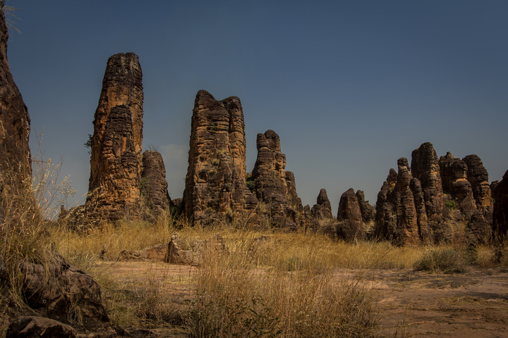

Les Pics de Sindou
Description
Les Pics de Sindou sont une formation rocheuse spectaculaire située à environ 30 km au sud-ouest de Banfora. Ces pics de grès rouge, sculptés par le vent et l'eau au fil des millénaires, offrent un paysage unique et impressionnant. Le site est accessible par une piste qui traverse une savane dense, offrant déjà un aperçu de la richesse naturelle de la région.
Les visiteurs peuvent explorer les différents pics à pied, certains offrant des points de vue panoramiques sur la région. Le site est particulièrement impressionnant pendant la saison sèche, lorsque les couleurs des roches sont particulièrement vives.
Importance Naturelle et Culturelle
Les Pics de Sindou sont un site naturel majeur de la région des Cascades du Burkina Faso. Ils sont le résultat de millions d'années d'érosion naturelle, créant des formations géologiques uniques qui témoignent de l'histoire géologique de la région. Le site est également un lieu sacré pour les communautés locales, qui y pratiquent des rituels traditionnels et des cérémonies liées à la fertilité et à la protection.
Depuis les années 1980, le site est devenu une destination touristique importante, attirant des visiteurs du monde entier intéressés par la géologie et la nature. Des efforts de préservation sont en cours pour protéger ces formations géologiques uniques et maintenir l'équilibre entre le tourisme et la protection de l'environnement.
Informations Pratiques pour la Visite
- Localisation : Près de Sindou, à environ 30 km au sud-ouest de Banfora. Le trajet peut prendre environ 1 heure.
- Localisation : Près de Sindou, à environ 50 km à l'ouest de Banfora. Le trajet peut prendre environ 1 heure.
- Activités : Randonnée guidée, escalade (avec guide et équipement), photographie, découverte de l'histoire et de la culture locale.
- Meilleure période pour visiter : Pendant la saison sèche (octobre à mai) pour faciliter la randonnée. Les températures sont plus clémentes en début et fin de journée.
- Équipement conseillé : Chaussures de randonnée robustes, vêtements légers et couvrants, chapeau, crème solaire, beaucoup d'eau.
- Conseils : Il est fortement recommandé de prendre un guide local pour explorer les Pics. Les guides connaissent les sentiers, l'histoire du site et peuvent assurer une visite sécurisée et enrichissante. Respectez les indications concernant les zones sacrées.
{kind=link}
{kind=link}
{kind=link}